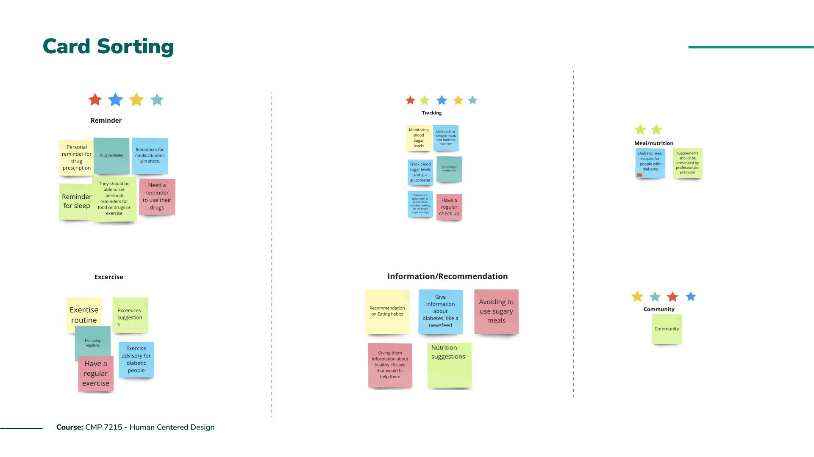
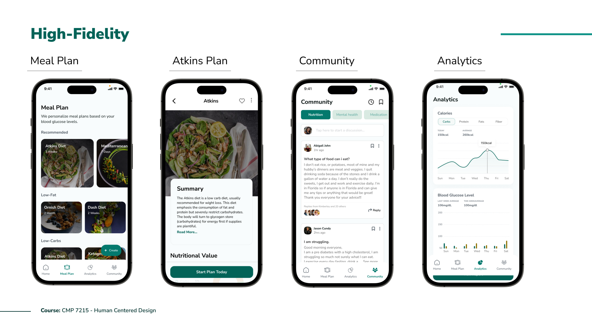
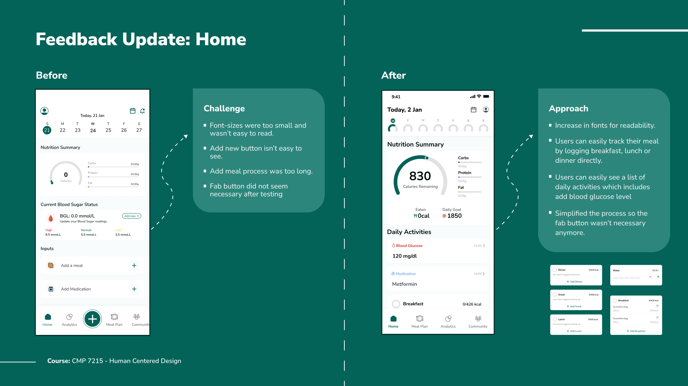
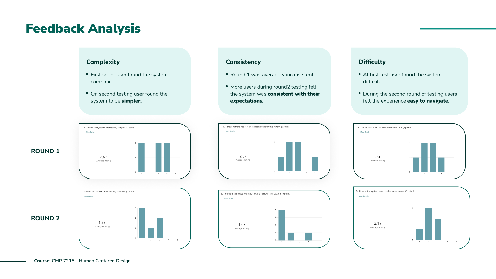

Carbs Buddy is a diabetes management application focused on helping individuals improve their eating habits and keep track of their nutritional intake.
Diabetes is a prevalent health condition that affects millions of people worldwide. Nutrition plays a crucial role in managing diabetes, and there is a need for accessible and effective solutions to help individuals with diabetes make informed food choices.
According to Diabetes UK, as of 2021, there are approximately 4.3 million people diagnosed with diabetes in the UK. Of this population, about 8% have Type 1 diabetes, 90% have Type 2 diabetes, and other forms of diabetes make up the remaining 2%. Research has shown that unhealthy eating habits are a major contributor to the development of diabetes. Individuals with diabetes struggle to adopt healthy eating habits due to a lack of awareness, motivation, and support. This can lead to complications and worsen health outcomes. A solution is needed to help individuals with diabetes adopt healthy eating habits, improve their quality of life, and reduce the burden of diabetes-related complications.
Carbs Buddy aims to provide a comprehensive solution for diabetes management by offering personalized meal plans, blood glucose level tracking, and a supportive community for users to share their experiences and tips.
Carbs Buddy stands out by offering a unique combination of features such as community support, personalized meal plans, and comprehensive blood glucose tracking. The application is designed to be user-friendly and accessible, with a focus on simplicity and readability for individuals with diabetic retinopathy.
Empowering Blood glucose Level managementWe identified potential users and requested that they complete specific tasks using the high-fidelity prototype designs. These tasks included creating an account, logging blood glucose levels and meals, selecting and editing meal plans, starting discussions, and setting reminders.
The first round of testing received a SUS score of 67.9%, with mixed reviews. Feedback was used to make iterative improvements to the application.
The second round of testing received a SUS score of 70%, showing improved user satisfaction and ease of use.
 